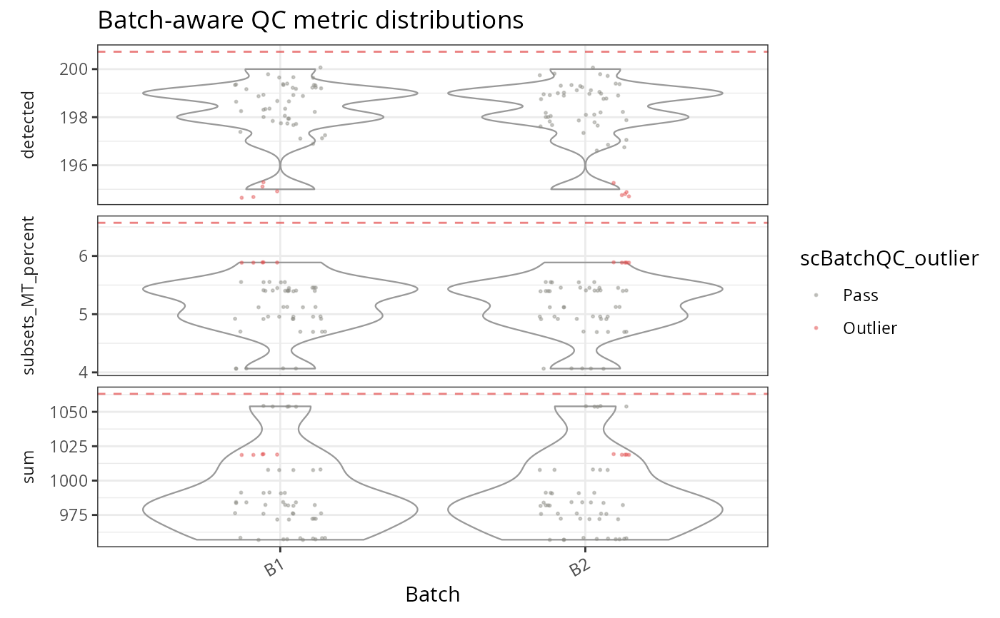

Produces a panel of violin plots showing per-batch distributions of
QC metrics, with harmonized threshold lines overlaid. Useful for
inspecting whether batchAwareQCMetrics thresholds are
sensible and for comparing batch quality visually.
plotBatchQC(
sce,
batch = NULL,
metrics = NULL,
show_thresholds = TRUE,
nmads = 3,
colour_by = "scBatchQC_outlier",
point_size = 0.4,
point_alpha = 0.4
)A SingleCellExperiment processed by
batchAwareQCMetrics.
A character(1) naming the batch column in
colData(sce).
A character vector of QC metric names to plot
(without the "scBatchQC_" prefix). Default: all available.
Logical. If TRUE, overlays the
batch-specific harmonized upper thresholds as dashed horizontal
lines. Default: TRUE.
Passed to harmonizeQCThresholds to
recompute thresholds for display. Default: 3.
A character(1) naming a colData
column to colour cells by (e.g. "scBatchQC_outlier").
Default: "scBatchQC_outlier".
Numeric. Jitter point size. Default: 0.4.
Numeric. Jitter point alpha. Default: 0.4.
A ggplot2 object. Can be modified with standard
ggplot2 functions or saved with ggsave().
library(SingleCellExperiment)
set.seed(42)
counts <- matrix(rpois(2000, lambda = 5), nrow = 200, ncol = 100)
rownames(counts) <- paste0("Gene", seq_len(200))
rownames(counts)[1:10] <- paste0("MT-", seq_len(10))
colnames(counts) <- paste0("Cell", seq_len(100))
sce <- SingleCellExperiment(assays = list(counts = counts))
sce$batch <- rep(c("B1", "B2"), each = 50)
sce <- batchAwareQCMetrics(sce, batch = "batch")
plotBatchQC(sce, batch = "batch")
